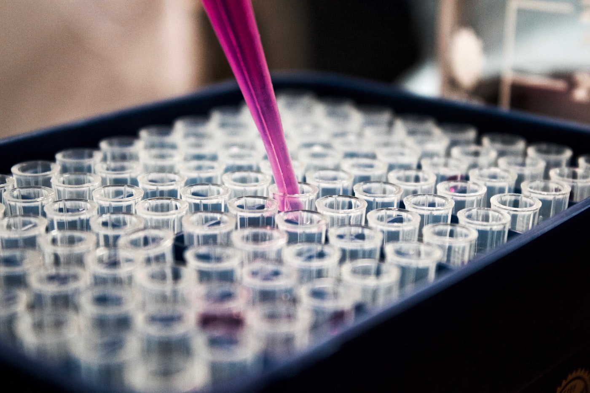

AI for Drug Discovery & Computational Biology

Biologically Informed AI, from Molecule to Patient
LSAIL is a research group at Chonnam National University developing AI methods that span the entire drug discovery pipeline — molecular design, virtual screening, safety prediction, and translational interpretation.
We work at the intersection of computational biology, cheminformatics, and deep learning, with a strong emphasis on building models that are biologically grounded, interpretable, and reliable enough to be useful in real discovery workflows.
Our research program builds on foundational contributions to AI-driven drug discovery — including widely cited work on hERG channel blocker prediction (hERG-Att, BayeshERG), a comprehensive review of AI in drug discovery, and more recent advances in generative models such as a genotype-to-drug diffusion model for tailored anti-cancer therapeutics (Nature Communications, 2025).
Our Mission
We build biologically informed AI that accelerates drug discovery — from generative molecular design to safety prediction and personalized therapeutics.
Our research is guided by three principles:
① Biology-aware. Chemistry alone is not enough. We integrate genotype, phenotype, transcriptomics, and morphology so that models reflect the biological systems they aim to predict.
② Reliable & interpretable. Safety-critical predictions (hERG, ADMET, in vivo toxicity) demand calibrated uncertainty and explanations clinicians and chemists can trust — not black boxes.
③ Translational. We aim for methods that scale to realistic screening and design problems and connect back to biological endpoints relevant to patients.
We also train the next generation of researchers working at the intersection of AI, cheminformatics, and life science.
Research Focus
Generative Molecular Design
Diffusion and generative models for small-molecule design, including genotype-conditioned design for personalized, tailored therapeutics.
Cardiac Toxicity (hERG)
Attention-based and Bayesian deep learning (hERG-Att, BayeshERG) for robust, interpretable prediction of hERG channel blockers.
In Vivo Toxicity Prediction
Multi-task learning that transfers knowledge from chemical structure and in vitro assays to predict in vivo toxicity endpoints.
Biology-aware Molecular Representation
Molecular embeddings enriched with genotype, phenotype, transcriptomics, and morphological information from multi-omics data.
Virtual Screening & Prioritization
Data-driven virtual screening pipelines and candidate prioritization for hit identification and lead optimization.
Chemistry × Biology Multimodal Learning
Models that jointly reason over chemical and biological modalities to bridge molecular design and translational endpoints.
Where We Are
Artificial Intelligence
Department of Artificial Intelligence
Chonnam National University
Gwangju, Republic of Korea